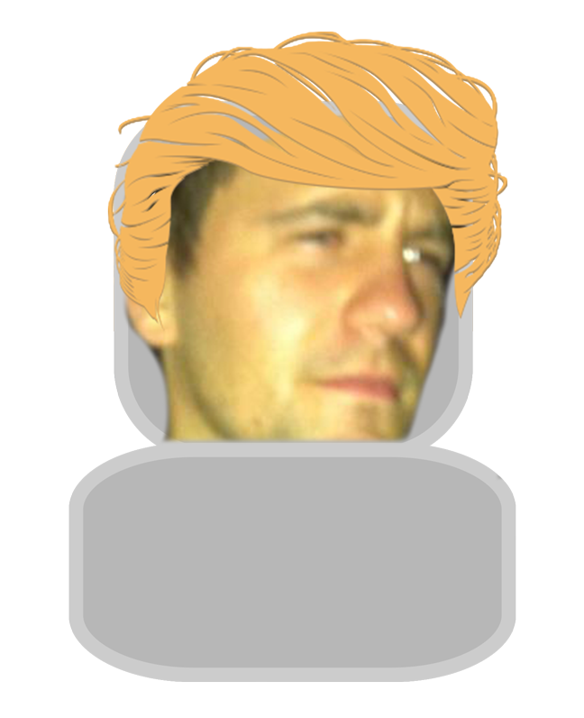

Etter at han var ferdig på bachelor studiet på westerdals, så ble han etter kort tid rekkruttert av e-tjenesten til Norge. Ble leder for cyberenheten og var dreven på forskning ved siden. Tok både Master og PhD iløpet av 1 år. Mens han var ute for å kjøpe lunsj, så kom en armada av trump-botter for å ta kontroll over Norge. Jan Robert klarte å redde 2 barn, men mistet sitt eget liv i kamp.
Jan Robert
f. 27.03.1992
d. 15.05.2037
Drept som en helt i et forsøk på å redde 2 barn
Dro på besøk til Japan i høytiden 2016. Ble værende og kom inn i et miljø som slektet veldig på cyberpunk. Han ble interessert i cloudservice, og skrev virus som han kunne tjene på. Han gikk etterhvert over til å skrive antivirus, og tjente gode penger på det. Cirka 2035, så følte han at hans menneskelige kropp var ubetydelig, og hjernekapasiteten var ikke nok, så han lastet seg selv opp til en skytjeneste. Denne ble etterhvert infisert av et virus han selv skrev, etter et besøk på "the dark net". Viruset ble slettet av antivirusen han selv hadde laget, men det endte opp med at bevistheten til Erlend også ble visket ut.
Erlend
f. 15.11.1995
d. 15.05.2042
Fikk maleware og ble slettet av antivirus
Gikk fra å designe blogger og nettsider for stjerner og store bedrifter til å retusjere bilder av kjendiser for ende større lønnsjekk. Trump så etterhvert talentet til Tómas, og hyret han inn til å få alle bildene av Trump til å se bra ut. Det ble etterhvert så intenst og krevende, at Tómas måtte sitte døgnet rundt. Trump var ikke en god sjef, og krevde 15 timers arbeidsdager 6 dager i uken av Tómas. Dette endte opp med at Tómas glemte å spise og drikke.
Tómas
f. 07.11.1997
d. 11.07.2077
Ble bitchen til Trump fordi han var veldig flink til å retusjere bilder av han. Døde av underernæring
Fullførte skolen med alle mulige distinksjoner. Best in class, valediktorian også videre. Lagde arvtakerent til c++, Gulrut#. Startet på store, ambisjonsfylte prosjekter etter skolen og fikk gjennombrudd i kvantemaskiner, kunstig intelligens og romferdsel. Mange assosierer Sebastian med han som fant opp den første roboten som besto turing-testen. Er Sebastian årsaken til dagens tilstander? Ingen har sett Sebastian siden 2042.
Sebastian
f. 02.05.1996
d. ukjent
Skapte arvtageren til c++, 'Gulrut#'. Sist sett 2042. Trolig samsvoren med kunstig intelligensens leder.
Espen insisterte på at alle skulle ta med bursdagskake til han da han hadde bursdag i januar. Det endre opp med at hele klassen på omkring 180 elever tok med kake. Sebastian tok selvfølgelig med Gulrotkake. Overlykkelig som Espen ble, så spiste han kake i ekstase. Dette førte til at han fikk forstoppelse. Han døde sakte og smertefult. Tarmene sprakk og magesekken hans revnet. Han hadde brownies og gulrotkake overalt. Dette var ikke et pent synt. Standhaftig som han var, så insisterte han på å spise snickersen som kjæresten hans hadde tatt med fra Amserdam.

Espen
f. 20.01.1987
d. 25.01.2017
Overspiste seg på bursdagskaker i 2017.
Til Tobias sin store frustrasjon, så var ikke GitHub et program som hadde særlig lyst til å samarbeide med han da han jobbet iherdig og modig på prosjektoppgaven Supergruppe 7 holdt på med. Han forsøkte gjentatte ganger å fikse problemene - men det var forgjeves. Tobias endte til slutt opp med å putta fingeren sin inn i USB outletten i full frustrasjon. Han støt. Dette støtet skulle føre til en ujevn hjerterytme som gjorde at hans hjerte stoppet å slå den andre mars, 2076.
Tobias
f. 14.05.1996
d. 02.03.2076
Death by GitHub